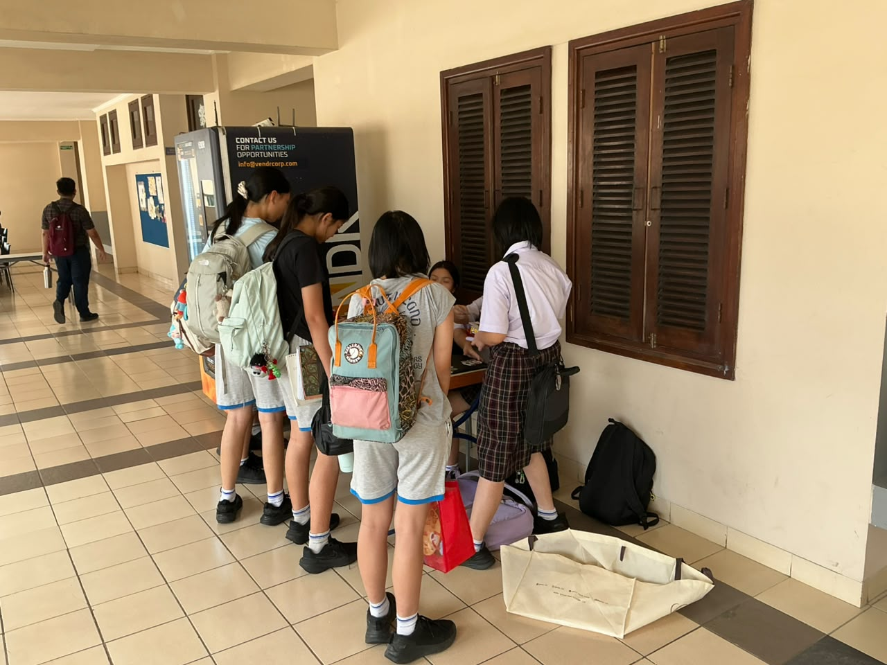

Articles page
2026
Featured News
Check out whats going on in Laurensia Cup!!!
Writer : Oliver Christov Sitanaya
date: 9 october 2026

Laurensia Recent Heartbeat
Every big event needs a beat, and for Laurensia Cup 2026, this song is the beat. The sound of Laurensia Cup is the official sound of our own, created specifically for this year's event. This song isn't just music to be listened to. This song is a way to unite us all, whether you are competing, cheering, or supporting, or walking around enjoying the atmosphere of the event.
Laurensia Cup Starts soon!
The wait is almost over! everyone is working hard, teams are practicing to compete, corridors are filled with laurensia spirit. come and cheer for your friends competing outdoors. Just dont forget to stay hydrated!
Laurensia cup opening!
Laurensia Cup prepares a huge surprise for everyone who attends this event. teams have been working hard behind the scene and teams on stage have polish their dancing and acting skills to provide entertainment for guests. Decorations have been placed and beautifully designed by our talented creative students. dancers and actors have rehearsed over and over to make sure no flaws occurs mid performance and make sure we all experience optimal time together.
From Regulations to Breakout Rooms
Laurensia Cup 2026 Prepares Representatives for Kickoff
Writer : Catherine Jennie Susanto
Date: 7 october 2026
Technical meetings
The committee of Laurensia Cup 2026 effectively held the virtual Technical Meeting via Zoom on 6th October. The main purpose of the meeting was to align perceptions and build a unified understanding among committee members and team members. During the session, participants reviewed match regulations, tournament flow, disciplinary and penalty systems, and detailed match schedules to ensure that on matchday, there are no misunderstandings or unnecessary complaints.
According to Kayla, the PIC of the competition division, the Technical Meeting went successfully according to the planning. She mentioned that the Zoom Breakout Rooms for each competition branch was very helpful in keeping discussions focused. Although minor technical challenges occur such as late arrivals, unformatted display names, and connectivity issues for a few referees, the committee handled difficulties with an appropriate response. For example, questions that required technical verification from absent referees were put on hold and subsequently answered after proper consultation, while recap presentations and attendance files were distributed afterwards.
Throughout the meeting, members of each team representative showed high keenness and curiosity throughout the session. Inside each breakout room, there were discussions regarding penalty conditions, tardiness tolerances, player substitution mechanics, and jersey requirements. Fortunately, PIC representatives for each sport, along with attending referees, successfully facilitated these discussions and clarified the participants' inquiries.
Consequently, all team representatives have to complete several crucial steps before competing during the day. Representatives are required to fill out the attendance Google Form as confirmation and proof of agreement to the tournament regulations. Furthermore, teams must complete any remaining player administration files, stay updated on schedule announcements, and ensure their entire team arrives on time according to the agreed matchday schedule.
Mural Laurensia Cup
Introducing the massive blast of color thanks to the students who came together to paint this year’s mural.
Writer : Oliver Christov Sitanaya
date: 3 october 2026

Ignite your colours!
Santa Laurensia has a tradition where, every time the Laurensia Cup is hosted, the walls along a corridor of the school are painted with murals pertaining to the tournament’s theme. Now, as we move closer to D-Day, members of the Mural Committee are putting all their hard work and dedication into painting one of the greatest murals yet in the school’s corridor.
This year, the murals distinguish themselves from previous murals through the use of bright and colorful designs, which bring positive energy and a livelier atmosphere to the hallways. The designs of the murals themselves follow the concept of a beautiful garden inspired by Laurensia Cup 2026’s theme, Meracharis. According to the Mural Committee’s Person in Charge (PIC), the peacocks that can be seen in most of the paintings serve as the main symbols throughout the murals, surrounded by elements of nature such as flowers, mountains, and pathways. While the peacocks represent beauty and uniqueness, the garden symbolizes peace and growth. Together, these elements reflect the spirit of Meracharis, in which people are encouraged to utilize their uniqueness and the talents that God has given them with compassion, sincerity, and grace.
Before beginning the painting process, all committee members of the Mural division must brainstorm and share their ideas with each other to find out how to best describe this year’s Laurensia Cup theme, not with words but through beautiful art. As part of the brainstorming process, one of the committee members shared that they started by sketching their ideas digitally. After that, their work had to be evaluated before finally being painted on the walls of the corridor. Though it may seem easy, the committee expressed how exhausting the evaluation process was because revisions to their digital work had to be made many times to fulfill the necessary criteria. Nevertheless, the resulting murals proved to be worth all the time and effort they had invested, as expressed by the committee member.
After all the initial drafts were approved, the PIC divided the members into groups, with each group responsible for a particular wall in the corridor. However, differences in painting styles and conflicting schedules sometimes made coordination difficult, so the PIC highlighted how important communication and teamwork were in ensuring that everything ran smoothly. The PIC also emphasized the importance of diversity in painting styles, stating that “these differences actually made the murals more special because everyone could contribute their own style and creativity. In the end, the murals became unique and represented everyone's effort and involvement.”
In the end, beyond the arduous process of painting the murals, there were also plenty of memorable moments that the committee members experienced. For example, one committee member expressed how excited she was to use the ladders to paint the murals, while the PIC also expressed how special it was to unite every member’s ideas into one beautiful mural. Ultimately, the murals represent more than an artistic tradition of Laurensia Cup; they embody the greatness that can be achieved through the Mural Committee’s collaboration, creativity, and determination to do one's absolute best.
Angeline Harlijanto (PIC of Mural Division)
Louisa Concieta Tiono (Committee of Mural Division)
Meet the fundraising team
A massive shoutout to our incredible fundraising team
Writer : Oliver Christov Sitanaya
date: 4 october 2026

Who are they?
Every big event requires funding in order for it to progress smoothly. Decorations, gifts, tools, and a sound system- everything requires funding. The fundraising team is a group of students who work hard collecting funds so that Laurensia Cup 2026 can launch as optimally as possible. Theta are students behind the scenes who make sure everything is ready before the first competition starts.
Collect funds
Instead of asking for money, our fundraising team found an enjoyable way to seek funds, which is through food! They sell multiple candies and snacks around the school. Whether you like something sweet or small snacks to get through a tough day, there will always be delicious snacks waiting for you. Every time you purchase, you not only fill your belly, but you also help Laurensia Cup improve.
Protecting everyone's enthusiasm
Imagine a rough day at the event and school. There are lessons, practice, and even meetings. As time passes, our bodies will be exhausted. That is where sweet snacks can restore your energy. The fundraising team supports student enthusiasm, teachers, and the committee with delicious food and snacks. This is a small act, but the impact is beneficial for someone's mood.
The Hardship they go through
Behind every snack, there are efforts. The team has to plan what's being sold, prepare the food, set up the selling table, and keep everything clean and in order. They have to speak to many people and explain this event, along with inviting them to join. Sometimes the temperature isn't quite favorable, it's crowded, and sometimes they also have to wake up in the morning and return home late. But they keep smiling and try their best to make sure we all can get the best experience.